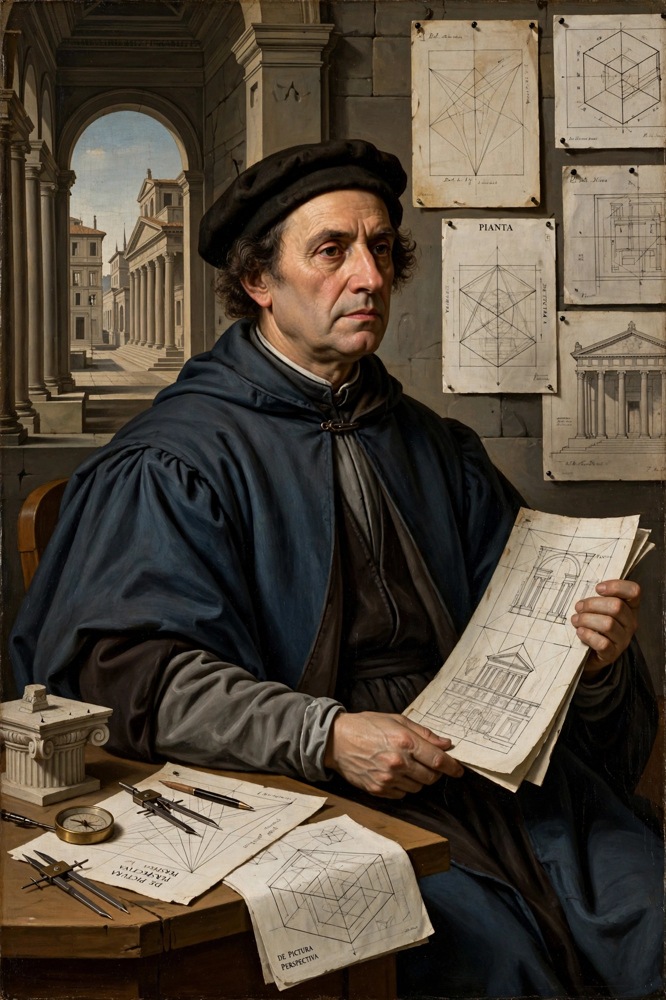

Leon Battista Alberti (14 February 1404 – 25 April 1472) was an Italian Renaissance humanist author, artist, architect, poet, priest, linguist, philosopher and cryptographer; he epitomised the nature of the Renaissance man.

| Leon Battista Alberti | |
|---|---|
| Born | 14 February 1404, Genoa |
| Died | 25 April 1472, Rome |
| Known for | De pictura; De re aedificatoria; Palazzo Rucellai; Santa Maria Novella façade |
His De pictura (1435) gave the first systematic account of linear perspective in painting. De re aedificatoria (1452), modelled on Vitruvius, was the first architectural treatise of the Renaissance. As an architect he designed the façades of Santa Maria Novella and Palazzo Rucellai in Florence and Sant'Andrea in Mantua.
Alberti wrote on family life, education, sculpture and cipher, inventing a polyalphabetic cipher disk. See Renaissance humanism and Filippo Brunelleschi.